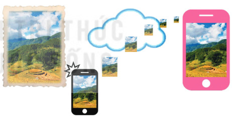
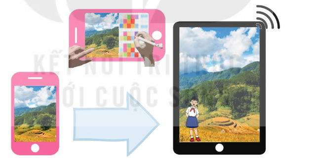

Dành cho giáo viên
Theo dõi lớp
| Học sinh / Nhóm | Đã nộp | Cập nhật |
|---|
Bước 1
1 Khởi động
Khám phá Hình ảnh khởi động
Trò chuyện Cùng An, Minh và Khoa
Đoạn trò chuyện gợi mở (không có trong SGK)
Khoa: Tớ tìm thấy bức ảnh ruộng bậc thang rất đẹp trong tập ảnh cũ của bố.
An: Cho tớ xem với! Nhưng nhà bạn xa quá…
Khoa: Để tớ chụp lại bằng điện thoại rồi gửi qua thư điện tử cho bạn.
Minh: Ảnh in thành ảnh số rồi! Ảnh số khác ảnh in ở điểm nào nhỉ?
An: Cho tớ xem với! Nhưng nhà bạn xa quá…
Khoa: Để tớ chụp lại bằng điện thoại rồi gửi qua thư điện tử cho bạn.
Minh: Ảnh in thành ảnh số rồi! Ảnh số khác ảnh in ở điểm nào nhỉ?
Hoạt động 1 Ảnh in và ảnh số
Trong tập ảnh cũ, Khoa thấy bức ảnh ruộng bậc thang. Để chia sẻ ảnh với An mà không cần phải đến nhà bạn, Khoa đã dùng điện thoại thông minh chụp lại bức ảnh và gửi cho An qua thư điện tử. Em hãy trả lời các câu hỏi sau.

Ghi bài Khởi động
Sau khi thầy cô chốt, em chép nội dung dưới đây vào vở.
Bước 2 · Hình thành kiến thức mới
2.1 Thông tin trong môi trường số
Đọc hiểu a) Thông tin số
Đọc mục a) (SGK trang 10–11). Bằng thao tác chụp lại bức ảnh, Khoa đã tạo ra một bức ảnh số. Khác với bức ảnh trên giấy, bức ảnh số được tạo ra không tốn vật liệu và khi Khoa gửi cho An, Khoa không bị mất đi bức ảnh đó. Thông tin được mã hoá thành dãy bit, được chuyển vào máy tính, điện thoại thông minh, máy tính bảng,… để có thể lưu truyền, trao đổi trong môi trường kĩ thuật số còn được gọi ngắn gọn là thông tin số. Thông tin số có thể được truy cập từ xa thông qua kết nối Internet; dễ dàng được nhân bản và chia sẻ, còn có thể được lan truyền tự động do nhiều thiết bị được đồng bộ với nhau; khó bị xoá bỏ hoàn toàn.
Hoạt động 2 Thông tin số
Khoa gửi cho An bức ảnh ruộng bậc thang qua thư điện tử. Nhận được, An chỉnh sửa lại ảnh cho đẹp hơn và sử dụng nó làm nền cho ảnh của mình rồi đưa lên trang cá nhân trên mạng xã hội.

Đọc hiểu b) Thông tin số trong xã hội
Đọc mục b) (SGK trang 11). Khi bức ảnh đã được chia sẻ qua một ứng dụng, nó sẽ được lưu trữ và cho phép một số người được tiếp cận hay tiếp tục chia sẻ. Thông tin số có thể được lưu trữ với dung lượng rất lớn bởi nhiều cá nhân, tổ chức. Không phải mọi thông tin trên mạng đều chân thực: An có thể lấy bức ảnh ruộng bậc thang được chụp ở Lào Cai làm nền cho ảnh của mình, nhưng không có nghĩa là An đã tới Lào Cai. Thông tin số có độ tin cậy rất khác nhau, phụ thuộc vào nguồn gốc và mục tiêu thông tin.
Ghi bài 1. Thông tin trong môi trường số
Sau khi thầy cô chốt, em chép nội dung dưới đây vào vở.
Bước 2 · Hình thành kiến thức mới
2.2 Thông tin đáng tin cậy
Hoạt động 3 Tin giả
Đọc hiểu Xác định thông tin đáng tin cậy
Đọc mục 2 (SGK trang 12–13). Thông tin không đáng tin cậy có thể là: thông tin không trung thực, mang tính chất lừa dối; thông tin đồn thổi, dẫn em đến kết luận thiếu căn cứ; thông tin thiếu kiểm chứng dẫn em đến quyết định sai lầm. Một số gợi ý giúp em xác định thông tin đáng tin cậy:
- Xác định nguồn thông tin: thẩm quyền và uy tín của tổ chức hay cá nhân cung cấp thông tin ảnh hưởng đến độ tin cậy (thông tin từ blog có độ tin cậy thấp vì ai cũng có thể viết blog).
- Phân biệt ý kiến và sự kiện: ý kiến là quan điểm, có độ tin cậy thấp hơn sự kiện.
- Kiểm tra chứng cứ của kết luận: kết luận không có chứng cứ có độ tin cậy rất thấp.
- Đánh giá tính thời sự của thông tin: nội dung trang web đã lâu không được cập nhật thường có độ tin cậy thấp.
Ghi bài 2. Thông tin đáng tin cậy
Sau khi thầy cô chốt, em chép nội dung dưới đây vào vở.
Bước 3
3 Luyện tập
Gắn nhãn Ôn lại kiến thức bằng hình
Luyện tập Bài tập SGK trang 13
Ghi bài Luyện tập
Sau khi thầy cô chốt, em chép nội dung dưới đây vào vở.
Bước 4
4 Vận dụng
Vận dụng Tìm thông tin và tin đồn
Ghi bài Vận dụng
Sau khi thầy cô chốt, em chép nội dung dưới đây vào vở.